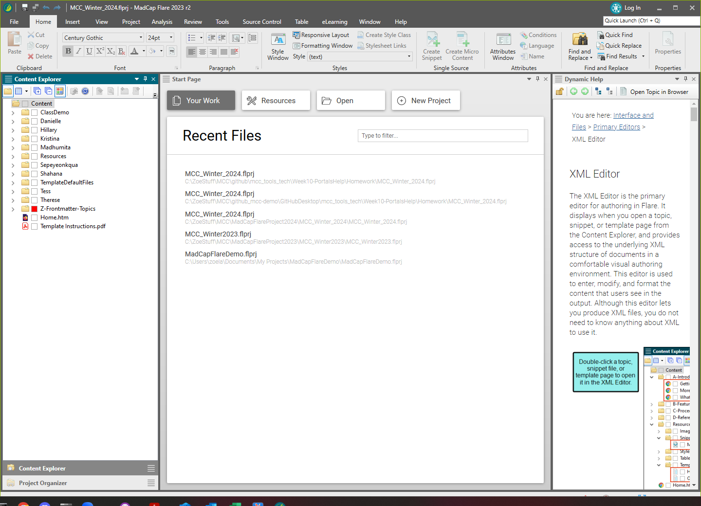
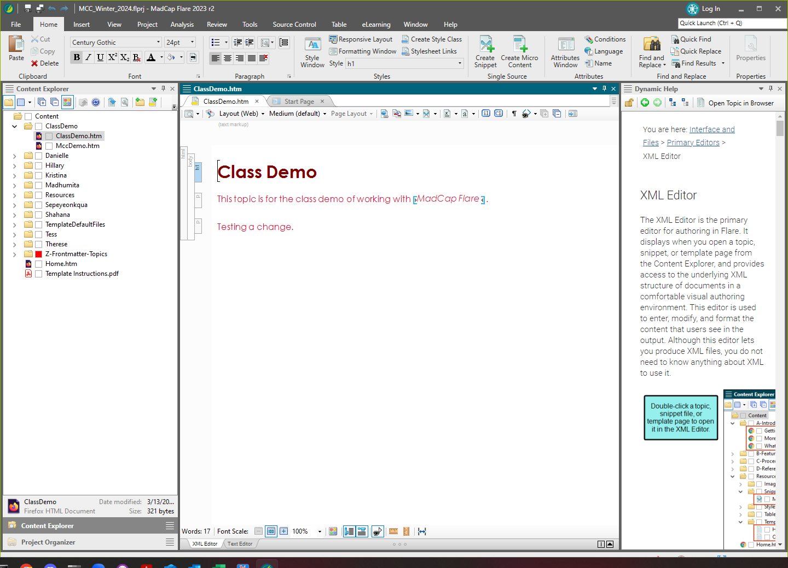

Edit your Flare topic
When you start at a place using Flare, you most likely will be working on
pre-existing content. Therefore, I've set up a topic for you to start working
with.
Make sure you've synced with the class repository to have the latest and greatest set
of files.
- Open the class Flare project,
mcc_tools_tech\Week10-PortalsHelp\Homework\MCC_Winter_2024.flprj.

- In the Content Explorer, expand your content folder.
There should be a content folder named after you.
- Double-click your file in your content folder to open the file.
There should be a YourName.htm file in
your folder.

You've opened your file and you're ready to start editing.